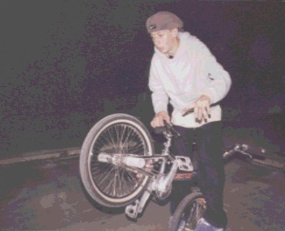

What is your real name and your nick name ?
my name is terry adams and i guess the only nick name that i have is imp ,
eugene colins gave it to me i think it means crazy little devil
Where you live?
i live in
hammond la
Age ?
i am 15 years old
Whats is your Birthday ?
Aug, 9 1983
School/work?
i dont go to school but my mom home
schools me, i work about 1 or 2 hours a day i am going to college in about 4
months , so that is kinda weird at 15 .
Have you ever been went to a public school ?
i went to public school until 6th grade then i stopped
Why ?
dont like the public school.
are you straight-edge (no drugs or drinking) ?
yep i have never did any thing never even smoked before i
hate people who do drugs..
How did you get into riding?
eugene collins got me in to
riding flatland when i was about 11 so i guess i got an early start on
things.
Do you have anyone who influences you for flatland riding?
well i think that i look up at andrew arroyo a lot and nathean p.
but eugene the most.
What is your favorite riders ?
my favorite riders are eugene collins, jason brown,
andrew faris, andrew arroyo, nathean p., and marti k. is my real favorite.
Have you rode with your favorite riders ? or any pro's ?
well i think think that i have rode with every pro except edgar , garry
smith , ross smith , chase and that crazy dude from canada named stefen.
Which do you prefer riding alone or with people ?
well when i ride alone i think that is when i get the job but when i ride
with people that hypes me up alot so that helps me progress alot too so i
think i like both.
Why you dont wear shinguards ?
haha shin gaurds are good i used to ride with them
but now i feel kinda stupid wearing them , like i am from the ply wood hoods
or somthing.
Do you have any injuries when you ride flatland or any kind of riding?
well one time i broke my wrist on a box jump in a show a
long time ago it hurt .
What was your worst Injury riding ?
that was the worst one i think, nope one time i
broke my finger nail off doing a bar flip.
How often do you ride ?
i have been trying to ride
about 5 to 7 hours a day.
Do you ride Street and dirt too ?
hahha i try to ride street all the time with my
friend ben and i always get a big head and hurt my self , but i reall y
never ride any dirt except the aunt hill in my back yard, hahah
Any favorite tricks in Street or dirt ?
well i love doing 360s and no footers but no footer are my favorite i guess
Do you ride at skateparks ?
yep
Your favorite skatepark ?
down south in new orleans la - always go to it
Have you done any racing?
i used to race in 92 when i was very little then i got me a frestyle bike and
never went back to the track.
Do you ever have been in police problem cause of your riding ?
not really but one time a cop tried to tell me to leave the
parkenlot and i did a hang five into his leg haha
what is your good story about run-in with police ?
no good storys yet, but soon will!
Flatland Skills... are Nature or nurture?
i think they come a little easy to me all
tricks do.
What is your first tricks that you learned ?
it was like a pogo on the back pegs i thought i was bad.
Favorite tricks ?
hitch hikers are cool and hitch hikers are real cool i love them i just
learned to spin them and i love the way it feels i just love hitch hikers
period.
Which front or rear wheel tricks do you like to work more on ?
i like both front and back but i think there are more things to
do on the front wheel .
why?
because i am stoked.
Are you trying to develop your own style in riding ?
well every time i try
to concontrate own my style i start riding like someone else so i been just
riding and hoping my style will form in its own way , it will.
Are you riding Brakeless ?
nope.
if you are not riding brakeless, What is your views on brakeless?
its cool to see people that have a lot of control ride brakless like chad
degrot and chase. but i have nothing against it i see my self pulling mine
of in a few years.
Can you list all of your sponsors here ?
bike zone-drews bmx mail order [swap meet] - play
clothing- and 2-hip bikes.
How do you feel to be sponsored right now ?
it is cool to have a company to support.
Is it more fun to be sponsored than just being a rider ?
i could not really tell you because i dont make money off from it, just co
sponscered.
Do you have any favorite bike frames ? or which GT show or 2-hip you like best ?
i dont think i have a favorite frame but i like the stout boy
that i am on.
Do you have any dislikes for frames or parts ?
not really except i would like to say that i broke like 13
gt show and i hate that bike but heard the 99, was better.
What did you do with your broken GT shows ? recycle them ? or just throw
them in your closet ?
i had to send them back to woody itson every time i broke them.
Do you have to pay for them every time you broke them
no, free
What was your first Contest riding ? it was the 1997 x trails in orlando florida. i loved it.
do you like or enjoy riding in contests at all ? is it really fun for you ?
yey i love contest i am
always thinking about going to them i love to go to contest and ride with
everyone there it si cool to hook up with friends you meet at old contests
and make new friends.
How do you feel to be videotaped ?
or Do you use a video camera to help yourself progress in flatland ?
well i like to watch myself
pull somthing every now and then so i will get my mom to go out there and
film me.
Is Linkt your first time being in a video ? or have you been in other videos ?
oh linkt was the first real video but eugene made one a while
back that i was in called flatland kings.
What do you think about ESPN and x-games ?
espn is the one thing that is
keeping the sport a live so who cares if paul higgins says the names of the
tricks wrong. and the x games are rad.
If you get in too much stuff (College or work or "real world")
Will you quit riding ?
i will not quit riding ever i am
addicted to it , if i am not riding i am thinking of riding but i ride more
than i think beacuse thinking gets me mad because when i am thinking of
riding it is because it is raining or somthing.
are you planning on moving out of Louisiana to live with some pros or
riding in more contests ?
ya i am going to live with andrew arroyo in
walnut creek cal. in about 2 years i hope.
What do you think about BMX and internet ? is internet good for freestyle bmx ?
it is real good for bmx and freestyle , i had no
idea that they had so much stuff online about riding it is cool to come
online and check out all the stoked sites.
Do you have anyone to thank ?
i would like to thank my
mom for everything she has paid for on my bike and 2-hip bikes for hooking
me up with the co sponscership [ron wilkerson] and hal up at play clothes
for being the nice person that he is and andrew arroyo for being the crazy
dude that he is. and i would love to thank aaron behnke for being a complete
ass to me a play contest in north carolina. i hate you aaron--
Do you have any lasts ?
keep riding and keep eating those tijuana mama pickled sausages...
Send some e-mail to Terry @ tj@i-55.com